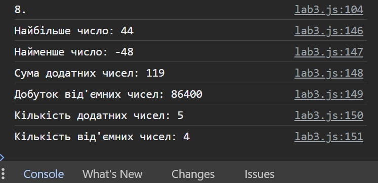

8. Створіть масив із 10 чисел. Напишіть функцію, яка буде приймати масив
і повертати: найбільше з цих чисел у масиві; найменше з цих чисел у
масиві; сума додатних чисел у масиві; добуток від’ємних чисел у масиві;
кількість від’ємних і додатних чисел у масиві.
Результат
Значення масиву:
[-12, 33, 7, -25, 44, -6, 19, 0, -48, 16]
